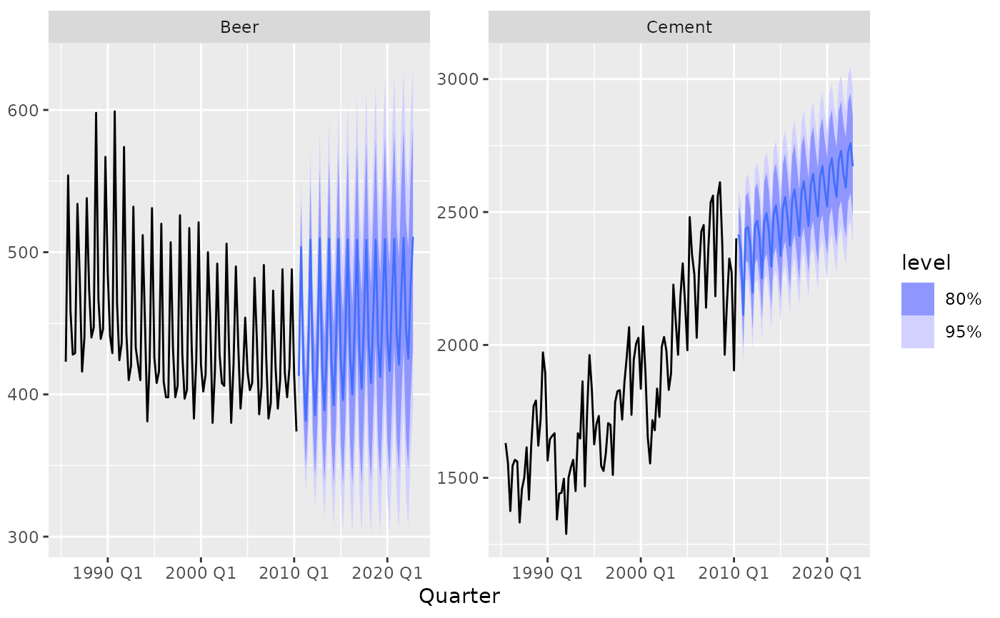
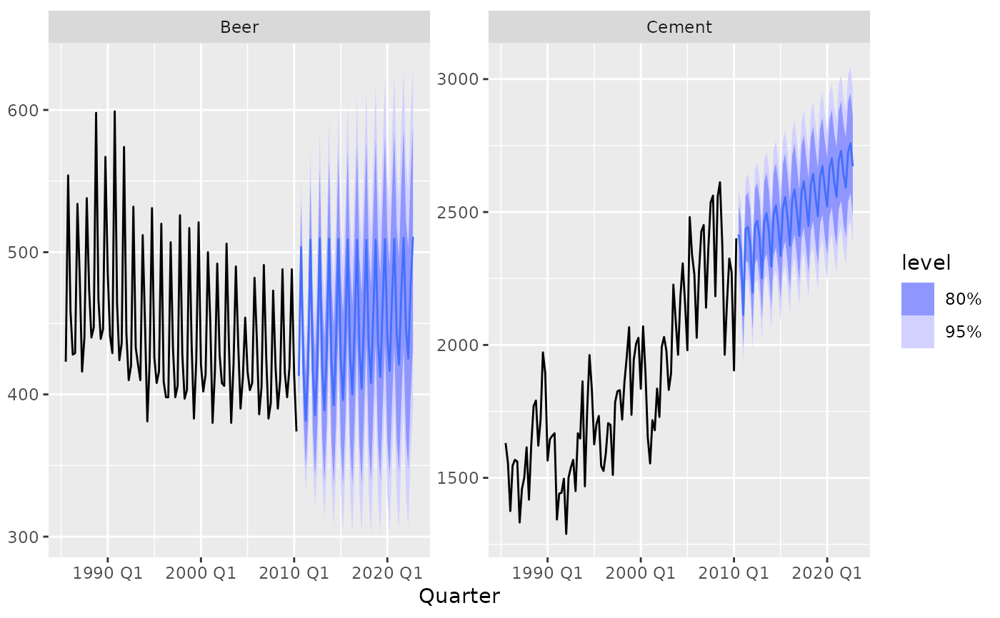

Estimates a VARIMA model of a given order.
VARIMA(formula, identification = NULL, ...)
# S3 method for class 'VARIMA'
forecast(
object,
new_data = NULL,
specials = NULL,
bootstrap = FALSE,
times = 5000,
...
)
# S3 method for class 'VARIMA'
fitted(object, ...)
# S3 method for class 'VARIMA'
residuals(object, ...)
# S3 method for class 'VARIMA'
tidy(x, ...)
# S3 method for class 'VARIMA'
glance(x, ...)
# S3 method for class 'VARIMA'
report(object, ...)
# S3 method for class 'VARIMA'
generate(x, new_data, specials, ...)
# S3 method for class 'VARIMA'
IRF(x, new_data, specials, impulse = NULL, orthogonal = FALSE, ...)Arguments
- formula
Model specification (see "Specials" section).
- identification
The identification technique used to estimate the model. Possible options include NULL (automatic selection), "kronecker_indices" (Kronecker index identification), and "scalar_components" (scalar component identification). More details can be found in the "Identification" section below.
- ...
Further arguments for arima
- object
A model for which forecasts are required.
- new_data
A tsibble containing the time points and exogenous regressors to produce forecasts for.
- specials
(passed by
fabletools::forecast.mdl_df()).- bootstrap
If
TRUE, then forecast distributions are computed using simulation with resampled errors.- times
The number of sample paths to use in estimating the forecast distribution when
bootstrap = TRUE.- x
A fitted model.
- impulse
A character string specifying the name of the variable that is shocked (the impulse variable).
- orthogonal
If TRUE, orthogonalised impulse responses will be computed.
Value
A model specification.
A one row tibble summarising the model's fit.
Details
Exogenous regressors and common_xregs can be specified in the model
formula.
Specials
pdq
The pdq special is used to specify non-seasonal components of the model.
pdq(p = 0:5, d = 0:2, q = 0:5)p | The order of the non-seasonal auto-regressive (AR) terms. If multiple values are provided, the one which minimises ic will be chosen. |
d | The order of integration for non-seasonal differencing. If multiple values are provided, one of the values will be selected via repeated KPSS tests. |
q | The order of the non-seasonal moving average (MA) terms. If multiple values are provided, the one which minimises ic will be chosen. |
xreg
Exogenous regressors can be included in an VARIMA model without explicitly using the xreg() special. Common exogenous regressor specials as specified in common_xregs can also be used. These regressors are handled using stats::model.frame(), and so interactions and other functionality behaves similarly to stats::lm().
The inclusion of a constant in the model follows the similar rules to stats::lm(), where including 1 will add a constant and 0 or -1 will remove the constant. If left out, the inclusion of a constant will be determined by minimising ic.
xreg(...)... | Bare expressions for the exogenous regressors (such as log(x)) |
Identification
Kronecker indices ("kronecker_indices", the default)
Determines the structural complexity and degrees of freedom in a VARIMA model by analysing the singularities in the polynomial matrices.
Kronecker indices represent the structural properties of the VARIMA system, focusing on the relationship between system inputs and outputs. These indices define the minimal realisation of the model, helping to determine the order and complexity of each equation in the system. They are particularly suited for capturing dynamic dependencies in multivariate systems with cointegrated processes. This is particularly useful for understanding system-wide dependencies and cointegrating relationships, however it is computationally intensive for models with many variables.
Scalar components ("scalar_components")
Simplifies VARIMA models by identifying univariate "scalar components" that combine linear combinations of variables into simpler sub-models. This uses canonical correlation analysis (CCA) to find linear combinations of variables with minimal lag orders. These combinations are then modeled as simpler ARIMA processes reducing the complexity and dimensionality of the full VARIMA model. This is particularly useful for identifying models with many variables, however it assumes good separability of the components.
No identification ("none")
Directly estimates the model as specified by p, d, and q. This allows
all coefficients up to lag p and q (for the AR and MA components) to be
freely estimated. This can be problematic as the estimation of parameters
without identification is not unique.
Identification is necessary for VARIMA models to ensure that the model is parsimonious, unique, and interpretable. Without proper identification, the model can become overly complex, redundant, or ambiguous, making estimation and interpretation challenging.
For a more detailed comparison of identification methods, refer to Athanasopoulos et al (2012).
References
Athanasopoulos, George, D. S. Poskitt, and Farshid Vahid. "Two Canonical VARMA Forms: Scalar Component Models Vis-à-Vis the Echelon Form." Econometric Reviews 31, no. 1 (January 2012): 60–83. https://doi.org/10.1080/07474938.2011.607088.
See also
Examples
library(tsibbledata)
aus_production %>%
autoplot(vars(Beer, Cement))
 fit <- aus_production %>%
model(VARIMA(vars(Beer, Cement) ~ pdq(4,1,1), identification = "none"))
#> Warning: NaNs produced
fit
#> # A mable: 1 x 1
#> `VARIMA(vars(Beer, Cement) ~ pdq(4, 1, 1), identification = "none")`
#> <model>
#> 1 <VARIMA(4,1,1) w/ mean>
fit %>%
forecast(h = 50) %>%
autoplot(tail(aus_production, 100))

fitted(fit)
#> # A tsibble: 218 x 4 [1Q]
#> # Key: .model [1]
#> .model Quarter Beer Cement
#> <chr> <qtr> <dbl> <dbl>
#> 1 "VARIMA(vars(Beer, Cement) ~ pdq(4, 1, 1), identificati… 1956 Q1 NA NA
#> 2 "VARIMA(vars(Beer, Cement) ~ pdq(4, 1, 1), identificati… 1956 Q2 NA NA
#> 3 "VARIMA(vars(Beer, Cement) ~ pdq(4, 1, 1), identificati… 1956 Q3 NA NA
#> 4 "VARIMA(vars(Beer, Cement) ~ pdq(4, 1, 1), identificati… 1956 Q4 NA NA
#> 5 "VARIMA(vars(Beer, Cement) ~ pdq(4, 1, 1), identificati… 1957 Q1 NA NA
#> 6 "VARIMA(vars(Beer, Cement) ~ pdq(4, 1, 1), identificati… 1957 Q2 218. 588.
#> 7 "VARIMA(vars(Beer, Cement) ~ pdq(4, 1, 1), identificati… 1957 Q3 228. 636.
#> 8 "VARIMA(vars(Beer, Cement) ~ pdq(4, 1, 1), identificati… 1957 Q4 300. 648.
#> 9 "VARIMA(vars(Beer, Cement) ~ pdq(4, 1, 1), identificati… 1958 Q1 245. 561.
#> 10 "VARIMA(vars(Beer, Cement) ~ pdq(4, 1, 1), identificati… 1958 Q2 203. 627.
#> # ℹ 208 more rows
residuals(fit)
#> # A tsibble: 218 x 4 [1Q]
#> # Key: .model [1]
#> .model Quarter Beer Cement
#> <chr> <qtr> <dbl> <dbl>
#> 1 "VARIMA(vars(Beer, Cement) ~ pdq(4, 1, 1), identifica… 1956 Q1 NA NA
#> 2 "VARIMA(vars(Beer, Cement) ~ pdq(4, 1, 1), identifica… 1956 Q2 NA NA
#> 3 "VARIMA(vars(Beer, Cement) ~ pdq(4, 1, 1), identifica… 1956 Q3 NA NA
#> 4 "VARIMA(vars(Beer, Cement) ~ pdq(4, 1, 1), identifica… 1956 Q4 NA NA
#> 5 "VARIMA(vars(Beer, Cement) ~ pdq(4, 1, 1), identifica… 1957 Q1 NA NA
#> 6 "VARIMA(vars(Beer, Cement) ~ pdq(4, 1, 1), identifica… 1957 Q2 9.99 16.4
#> 7 "VARIMA(vars(Beer, Cement) ~ pdq(4, 1, 1), identifica… 1957 Q3 -2.33 -49.2
#> 8 "VARIMA(vars(Beer, Cement) ~ pdq(4, 1, 1), identifica… 1957 Q4 11.9 -33.0
#> 9 "VARIMA(vars(Beer, Cement) ~ pdq(4, 1, 1), identifica… 1958 Q1 7.82 59.1
#> 10 "VARIMA(vars(Beer, Cement) ~ pdq(4, 1, 1), identifica… 1958 Q2 2.58 -0.0744
#> # ℹ 208 more rows
tidy(fit)
#> # A tibble: 22 × 4
#> .model term .response estimate
#> <chr> <chr> <chr> <dbl>
#> 1 "VARIMA(vars(Beer, Cement) ~ pdq(4, 1, 1), identifi… cons… Beer 0.942
#> 2 "VARIMA(vars(Beer, Cement) ~ pdq(4, 1, 1), identifi… lag(… Beer -0.683
#> 3 "VARIMA(vars(Beer, Cement) ~ pdq(4, 1, 1), identifi… lag(… Beer -0.695
#> 4 "VARIMA(vars(Beer, Cement) ~ pdq(4, 1, 1), identifi… lag(… Beer 0.0692
#> 5 "VARIMA(vars(Beer, Cement) ~ pdq(4, 1, 1), identifi… lag(… Beer 0.0126
#> 6 "VARIMA(vars(Beer, Cement) ~ pdq(4, 1, 1), identifi… lag(… Beer -0.695
#> 7 "VARIMA(vars(Beer, Cement) ~ pdq(4, 1, 1), identifi… lag(… Beer -0.583
#> 8 "VARIMA(vars(Beer, Cement) ~ pdq(4, 1, 1), identifi… lag(… Beer 0.0126
#> 9 "VARIMA(vars(Beer, Cement) ~ pdq(4, 1, 1), identifi… lag(… Beer 0.0260
#> 10 "VARIMA(vars(Beer, Cement) ~ pdq(4, 1, 1), identifi… lag(… Beer 0.228
#> # ℹ 12 more rows
glance(fit)
#> # A tibble: 1 × 5
#> .model sigma2 kronecker_indices AIC BIC
#> <chr> <list> <list> <dbl> <dbl>
#> 1 "VARIMA(vars(Beer, Cement) ~ pdq(4, 1,… <dbl[…]> <NULL> 14.9 15.2
report(fit)
#> Series: Beer, Cement
#> Model: VARIMA(4,1,1) w/ mean
#>
#> Coefficients for Beer:
#> constant lag(Beer,1) lag(Beer,2) lag(Beer,3) lag(Beer,4)
#> Est. 0.9423 -0.683 -0.6952 0.0692 0.0126
#> lag(Cement,1) lag(Cement,2) lag(Cement,3) lag(Cement,4) lag(e_Beer,1)
#> Est. -0.6952 -0.5829 0.0126 0.026 0.2284
#> lag(e_Cement,1)
#> Est. 0.0303
#>
#> Coefficients for Cement:
#> constant lag(Beer,1) lag(Beer,2) lag(Beer,3) lag(Beer,4)
#> Est. 12.657 -3.0558 -2.1528 -0.0438 0.0736
#> lag(Cement,1) lag(Cement,2) lag(Cement,3) lag(Cement,4) lag(e_Beer,1)
#> Est. -2.1528 -2.0061 0.0736 0.3985 -2.2553
#> lag(e_Cement,1)
#> Est. 0.1631
#>
#> Residual covariance matrix:
#> Beer Cement
#> Beer 319.3980 109.8173
#> Cement 109.8173 7629.8398
#>
#> AIC = 14.9 BIC = 15.25
generate(fit, h = 10)
#> # A tsibble: 10 x 6 [1Q]
#> # Key: .model, .rep [1]
#> .model .rep Quarter .innov[,"Beer"] Beer Cement
#> <chr> <chr> <qtr> <dbl> <dbl> <dbl>
#> 1 "VARIMA(vars(Beer, Cement) ~ pdq(… 1 2010 Q3 -14.5 399. 2440.
#> 2 "VARIMA(vars(Beer, Cement) ~ pdq(… 1 2010 Q4 -9.20 493. 2324.
#> 3 "VARIMA(vars(Beer, Cement) ~ pdq(… 1 2011 Q1 26.2 443. 2117.
#> 4 "VARIMA(vars(Beer, Cement) ~ pdq(… 1 2011 Q2 -25.6 354. 2399.
#> 5 "VARIMA(vars(Beer, Cement) ~ pdq(… 1 2011 Q3 -4.73 398. 2385.
#> 6 "VARIMA(vars(Beer, Cement) ~ pdq(… 1 2011 Q4 -35.5 464. 2483.
#> 7 "VARIMA(vars(Beer, Cement) ~ pdq(… 1 2012 Q1 -17.4 416. 2269.
#> 8 "VARIMA(vars(Beer, Cement) ~ pdq(… 1 2012 Q2 4.34 372. 2470.
#> 9 "VARIMA(vars(Beer, Cement) ~ pdq(… 1 2012 Q3 -39.0 362. 2482.
#> 10 "VARIMA(vars(Beer, Cement) ~ pdq(… 1 2012 Q4 2.01 470. 2528.
#> # ℹ 1 more variable: .innov[2] <dbl>
IRF(fit, h = 10, impulse = "Beer")
#> # A tsibble: 10 x 4 [1Q]
#> # Key: .model [1]
#> .model Quarter Beer Cement
#> <chr> <qtr> <dbl> <dbl>
#> 1 "VARIMA(vars(Beer, Cement) ~ pdq(4, 1, 1), identific… 2010 Q3 1 0
#> 2 "VARIMA(vars(Beer, Cement) ~ pdq(4, 1, 1), identific… 2010 Q4 0.0887 -0.801
#> 3 "VARIMA(vars(Beer, Cement) ~ pdq(4, 1, 1), identific… 2011 Q1 -0.0141 -0.0172
#> 4 "VARIMA(vars(Beer, Cement) ~ pdq(4, 1, 1), identific… 2011 Q2 0.0807 0.140
#> 5 "VARIMA(vars(Beer, Cement) ~ pdq(4, 1, 1), identific… 2011 Q3 0.907 0.0238
#> 6 "VARIMA(vars(Beer, Cement) ~ pdq(4, 1, 1), identific… 2011 Q4 0.115 -1.15
#> 7 "VARIMA(vars(Beer, Cement) ~ pdq(4, 1, 1), identific… 2012 Q1 -0.0279 0.0335
#> 8 "VARIMA(vars(Beer, Cement) ~ pdq(4, 1, 1), identific… 2012 Q2 0.127 0.233
#> 9 "VARIMA(vars(Beer, Cement) ~ pdq(4, 1, 1), identific… 2012 Q3 0.851 -0.0140
#> 10 "VARIMA(vars(Beer, Cement) ~ pdq(4, 1, 1), identific… 2012 Q4 0.132 -1.23
fit <- aus_production %>%
model(VARIMA(vars(Beer, Cement) ~ pdq(4,1,1), identification = "none"))
#> Warning: NaNs produced
fit
#> # A mable: 1 x 1
#> `VARIMA(vars(Beer, Cement) ~ pdq(4, 1, 1), identification = "none")`
#> <model>
#> 1 <VARIMA(4,1,1) w/ mean>
fit %>%
forecast(h = 50) %>%
autoplot(tail(aus_production, 100))

fitted(fit)
#> # A tsibble: 218 x 4 [1Q]
#> # Key: .model [1]
#> .model Quarter Beer Cement
#> <chr> <qtr> <dbl> <dbl>
#> 1 "VARIMA(vars(Beer, Cement) ~ pdq(4, 1, 1), identificati… 1956 Q1 NA NA
#> 2 "VARIMA(vars(Beer, Cement) ~ pdq(4, 1, 1), identificati… 1956 Q2 NA NA
#> 3 "VARIMA(vars(Beer, Cement) ~ pdq(4, 1, 1), identificati… 1956 Q3 NA NA
#> 4 "VARIMA(vars(Beer, Cement) ~ pdq(4, 1, 1), identificati… 1956 Q4 NA NA
#> 5 "VARIMA(vars(Beer, Cement) ~ pdq(4, 1, 1), identificati… 1957 Q1 NA NA
#> 6 "VARIMA(vars(Beer, Cement) ~ pdq(4, 1, 1), identificati… 1957 Q2 218. 588.
#> 7 "VARIMA(vars(Beer, Cement) ~ pdq(4, 1, 1), identificati… 1957 Q3 228. 636.
#> 8 "VARIMA(vars(Beer, Cement) ~ pdq(4, 1, 1), identificati… 1957 Q4 300. 648.
#> 9 "VARIMA(vars(Beer, Cement) ~ pdq(4, 1, 1), identificati… 1958 Q1 245. 561.
#> 10 "VARIMA(vars(Beer, Cement) ~ pdq(4, 1, 1), identificati… 1958 Q2 203. 627.
#> # ℹ 208 more rows
residuals(fit)
#> # A tsibble: 218 x 4 [1Q]
#> # Key: .model [1]
#> .model Quarter Beer Cement
#> <chr> <qtr> <dbl> <dbl>
#> 1 "VARIMA(vars(Beer, Cement) ~ pdq(4, 1, 1), identifica… 1956 Q1 NA NA
#> 2 "VARIMA(vars(Beer, Cement) ~ pdq(4, 1, 1), identifica… 1956 Q2 NA NA
#> 3 "VARIMA(vars(Beer, Cement) ~ pdq(4, 1, 1), identifica… 1956 Q3 NA NA
#> 4 "VARIMA(vars(Beer, Cement) ~ pdq(4, 1, 1), identifica… 1956 Q4 NA NA
#> 5 "VARIMA(vars(Beer, Cement) ~ pdq(4, 1, 1), identifica… 1957 Q1 NA NA
#> 6 "VARIMA(vars(Beer, Cement) ~ pdq(4, 1, 1), identifica… 1957 Q2 9.99 16.4
#> 7 "VARIMA(vars(Beer, Cement) ~ pdq(4, 1, 1), identifica… 1957 Q3 -2.33 -49.2
#> 8 "VARIMA(vars(Beer, Cement) ~ pdq(4, 1, 1), identifica… 1957 Q4 11.9 -33.0
#> 9 "VARIMA(vars(Beer, Cement) ~ pdq(4, 1, 1), identifica… 1958 Q1 7.82 59.1
#> 10 "VARIMA(vars(Beer, Cement) ~ pdq(4, 1, 1), identifica… 1958 Q2 2.58 -0.0744
#> # ℹ 208 more rows
tidy(fit)
#> # A tibble: 22 × 4
#> .model term .response estimate
#> <chr> <chr> <chr> <dbl>
#> 1 "VARIMA(vars(Beer, Cement) ~ pdq(4, 1, 1), identifi… cons… Beer 0.942
#> 2 "VARIMA(vars(Beer, Cement) ~ pdq(4, 1, 1), identifi… lag(… Beer -0.683
#> 3 "VARIMA(vars(Beer, Cement) ~ pdq(4, 1, 1), identifi… lag(… Beer -0.695
#> 4 "VARIMA(vars(Beer, Cement) ~ pdq(4, 1, 1), identifi… lag(… Beer 0.0692
#> 5 "VARIMA(vars(Beer, Cement) ~ pdq(4, 1, 1), identifi… lag(… Beer 0.0126
#> 6 "VARIMA(vars(Beer, Cement) ~ pdq(4, 1, 1), identifi… lag(… Beer -0.695
#> 7 "VARIMA(vars(Beer, Cement) ~ pdq(4, 1, 1), identifi… lag(… Beer -0.583
#> 8 "VARIMA(vars(Beer, Cement) ~ pdq(4, 1, 1), identifi… lag(… Beer 0.0126
#> 9 "VARIMA(vars(Beer, Cement) ~ pdq(4, 1, 1), identifi… lag(… Beer 0.0260
#> 10 "VARIMA(vars(Beer, Cement) ~ pdq(4, 1, 1), identifi… lag(… Beer 0.228
#> # ℹ 12 more rows
glance(fit)
#> # A tibble: 1 × 5
#> .model sigma2 kronecker_indices AIC BIC
#> <chr> <list> <list> <dbl> <dbl>
#> 1 "VARIMA(vars(Beer, Cement) ~ pdq(4, 1,… <dbl[…]> <NULL> 14.9 15.2
report(fit)
#> Series: Beer, Cement
#> Model: VARIMA(4,1,1) w/ mean
#>
#> Coefficients for Beer:
#> constant lag(Beer,1) lag(Beer,2) lag(Beer,3) lag(Beer,4)
#> Est. 0.9423 -0.683 -0.6952 0.0692 0.0126
#> lag(Cement,1) lag(Cement,2) lag(Cement,3) lag(Cement,4) lag(e_Beer,1)
#> Est. -0.6952 -0.5829 0.0126 0.026 0.2284
#> lag(e_Cement,1)
#> Est. 0.0303
#>
#> Coefficients for Cement:
#> constant lag(Beer,1) lag(Beer,2) lag(Beer,3) lag(Beer,4)
#> Est. 12.657 -3.0558 -2.1528 -0.0438 0.0736
#> lag(Cement,1) lag(Cement,2) lag(Cement,3) lag(Cement,4) lag(e_Beer,1)
#> Est. -2.1528 -2.0061 0.0736 0.3985 -2.2553
#> lag(e_Cement,1)
#> Est. 0.1631
#>
#> Residual covariance matrix:
#> Beer Cement
#> Beer 319.3980 109.8173
#> Cement 109.8173 7629.8398
#>
#> AIC = 14.9 BIC = 15.25
generate(fit, h = 10)
#> # A tsibble: 10 x 6 [1Q]
#> # Key: .model, .rep [1]
#> .model .rep Quarter .innov[,"Beer"] Beer Cement
#> <chr> <chr> <qtr> <dbl> <dbl> <dbl>
#> 1 "VARIMA(vars(Beer, Cement) ~ pdq(… 1 2010 Q3 -14.5 399. 2440.
#> 2 "VARIMA(vars(Beer, Cement) ~ pdq(… 1 2010 Q4 -9.20 493. 2324.
#> 3 "VARIMA(vars(Beer, Cement) ~ pdq(… 1 2011 Q1 26.2 443. 2117.
#> 4 "VARIMA(vars(Beer, Cement) ~ pdq(… 1 2011 Q2 -25.6 354. 2399.
#> 5 "VARIMA(vars(Beer, Cement) ~ pdq(… 1 2011 Q3 -4.73 398. 2385.
#> 6 "VARIMA(vars(Beer, Cement) ~ pdq(… 1 2011 Q4 -35.5 464. 2483.
#> 7 "VARIMA(vars(Beer, Cement) ~ pdq(… 1 2012 Q1 -17.4 416. 2269.
#> 8 "VARIMA(vars(Beer, Cement) ~ pdq(… 1 2012 Q2 4.34 372. 2470.
#> 9 "VARIMA(vars(Beer, Cement) ~ pdq(… 1 2012 Q3 -39.0 362. 2482.
#> 10 "VARIMA(vars(Beer, Cement) ~ pdq(… 1 2012 Q4 2.01 470. 2528.
#> # ℹ 1 more variable: .innov[2] <dbl>
IRF(fit, h = 10, impulse = "Beer")
#> # A tsibble: 10 x 4 [1Q]
#> # Key: .model [1]
#> .model Quarter Beer Cement
#> <chr> <qtr> <dbl> <dbl>
#> 1 "VARIMA(vars(Beer, Cement) ~ pdq(4, 1, 1), identific… 2010 Q3 1 0
#> 2 "VARIMA(vars(Beer, Cement) ~ pdq(4, 1, 1), identific… 2010 Q4 0.0887 -0.801
#> 3 "VARIMA(vars(Beer, Cement) ~ pdq(4, 1, 1), identific… 2011 Q1 -0.0141 -0.0172
#> 4 "VARIMA(vars(Beer, Cement) ~ pdq(4, 1, 1), identific… 2011 Q2 0.0807 0.140
#> 5 "VARIMA(vars(Beer, Cement) ~ pdq(4, 1, 1), identific… 2011 Q3 0.907 0.0238
#> 6 "VARIMA(vars(Beer, Cement) ~ pdq(4, 1, 1), identific… 2011 Q4 0.115 -1.15
#> 7 "VARIMA(vars(Beer, Cement) ~ pdq(4, 1, 1), identific… 2012 Q1 -0.0279 0.0335
#> 8 "VARIMA(vars(Beer, Cement) ~ pdq(4, 1, 1), identific… 2012 Q2 0.127 0.233
#> 9 "VARIMA(vars(Beer, Cement) ~ pdq(4, 1, 1), identific… 2012 Q3 0.851 -0.0140
#> 10 "VARIMA(vars(Beer, Cement) ~ pdq(4, 1, 1), identific… 2012 Q4 0.132 -1.23